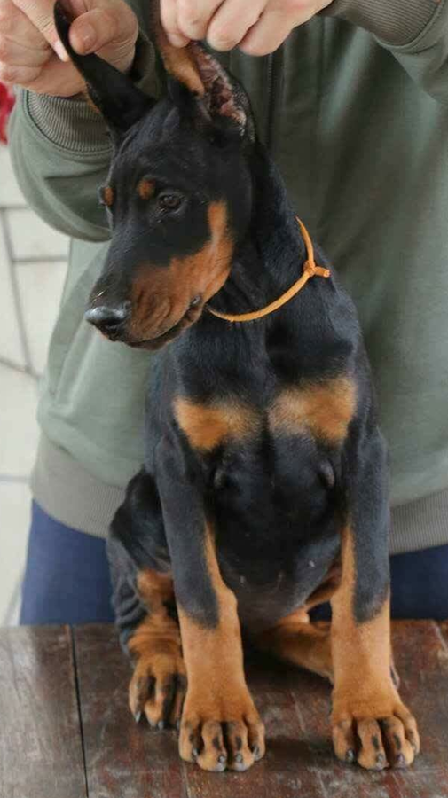

DoggySite
The Dobermann
The Dobermann, or Doberman Pinscher in the United States and Canada, is a medium-large breed of domestic dog that was originally developed around 1890 by Karl Friedrich Louis Dobermann, a tax collector from Germany. The Dobermann has a long muzzle. It stands on its pads and is not usually heavy-footed. Ideally, they have an even and graceful gait. Traditionally, the ears are cropped and posted and the tail is docked. However, in some countries, these procedures are now illegal. Dobermanns have markings on the chest, paws/legs, muzzle, above the eyes, and underneath the tail.
Dobermanns are known to be intelligent, alert, and tenaciously loyal companions and guard dogs. Personality varies a great deal between each individual but, if taken care of and trained properly, they are generally considered to be loving and devoted companions. The Dobermann is driven, strong, and sometimes stubborn. With a consistent approach, they can be easy to train and will learn very quickly.